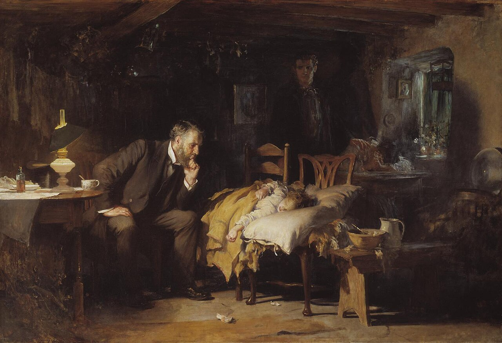
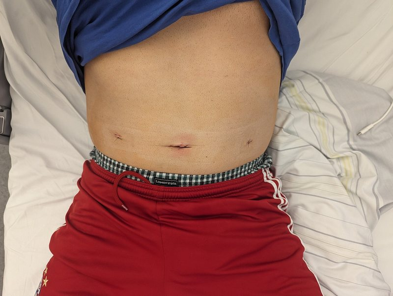

ביקור מודרך ליד המיטה
שיטה אחת לכל המפגשים מהסוג הזה: מהרגע שנכנסים לחדר ועד המעקב. גישה, אנמנזה, בדיקה, בדיקות עזר, אבחנה מבדלת, תוכנית, סיבוכים ומעקב
בסוף המפגש תדעו
- לגשת למטופל בצורה מסודרת: הכנה לפני החדר, הצגה עצמית והסתכלות "מהדלת" לפני שנוגעים
- לעבור בסדר קבוע משמונה תחנות: גישה, אנמנזה, בדיקה, בדיקות עזר, אבחנה מבדלת, תוכנית, סיבוכים ומעקב
- להזמין רק בדיקות שהתשובה שלהן תשנה החלטה ולבנות אבחנה מבדלת של "הכי סביר" מול "אסור לפספס"
- לכתוב תוכנית לפי בעיות ולצפות את הסיבוכים לפי היום שאחרי הניתוח
- להציג מטופל ליד המיטה בשתי דקות ובשפה שהמטופל מבין. להשתמש ברשימת הבדיקה בכל ביקור מודרך
מה זה ביקור מודרך?
- קבוצה קטנה, מטופל אחד ומדריך/ה. לומדים לחשוב ליד המיטה, לא לשמוע הרצאה
- המטרה הראשונה של האנמנזה והבדיקה היא לאשש או לשלול את האבחנה החשודה. כל השאר נבנה על זה
- שיחה ברורה ואמון הם הבסיס של הקשר בין המטופל למנתח. שאלה על המשפחה או על העבודה בונה את הקשר הזה
- המטופל הוא שותף: מבקשים רשות, מסבירים מה עושים ומודים לו בסוף

שמונה תחנות, שאלה אחת בכל תחנה
- גישהמי המטופל ומה רואים מהדלת?
- אנמנזהמה קרה ומה השתנה מאתמול?
- בדיקהמה הגוף מראה, מהמדדים ועד הפצע?
- בדיקות עזראיזו תשובה תשנה החלטה?
- אבחנה מבדלתמה הכי סביר ומה אסור לפספס?
- תוכניתמה עושים, מי עושה ועד מתי?
- סיבוכיםמה עלול לקרות ואיך נזהה מוקדם?
- מעקבמתי בודקים שוב ומה יגיד שאנחנו בכיוון?
↻ המעקב מחזיר אותנו לאנמנזה של מחר. כל יום מתחיל מחדש בתחנה 2
לפני שנוגעים: מהדלת ועד המיטה
- לפני החדר: גיליון המדדים ומאזן הנוזלים של 24 השעות האחרונות, התרופות שניתנו בלילה, המעבדה מהבוקר ומה נכתב בסיכום הניתוח
- בכניסה: היגיינת ידיים, שם ותפקיד, רשות לבדוק, פרטיות ומלווה כשצריך
- מהדלת: איך הוא נראה? חיוור, מזיע, נושם מהר, שוכב בלי לזוז או מתפתל?
- סביב המיטה: כל מה שמחובר למטופל: עירוי, זונדה, קטטר ומה יש בשקית, נקזים ומה יוצא מהם, מד רוויה, משאבת כאב
מה רואים מהדלת?
- שוכב שטוח. לא קם מהמיטה מאז הניתוח
- שתן מרוכז בשקית הקטטר. עירוי בקצב איטי
- מד נשימה (ספירומטר) על השידה, לא בשימוש
- אין זונדה ואין נקז
הממצא החשוב ביותר כבר בגיליון: דופק שעלה ושתן שירד. מגמה חשובה יותר מערך בודד
מה השתנה מאתמול?
מטופל חדש
- הכאב: מתי התחיל, איפה, לאן הוא נודד ומקרין, מה האופי שלו. סדר מלא במצגת הצגת מקרה
- תסמינים נלווים: בחילה, הקאות, שלשול, גזים ויציאות, חום וצמרמורות
- ניתוחים קודמים, מחלות רקע, תרופות (סטרואידים ומדכאי חיסון מסווים כאב וזיהום), רגישויות, עישון ואלכוהול
- באישה בגיל הפוריות: וסת אחרונה ואפשרות להיריון
אחרי ניתוח · שמונה שאלות בכל בוקר
- כאב: איפה, כמה, האם הוא שונה מאתמול
- בחילה או הקאות
- גזים או יציאה
- אוכל ושותה?
- הטיל שתן? (רוב המטופלים בתוך 6–8 שעות מהניתוח)
- קם והלך?
- נשימה, שיעול, כאב בחזה
- כאב או נפיחות ברגליים, בלבול בלילה
מר ל׳ · מה הוא מספר?
- הבטן כואבת "כמו אתמול, אבל יותר עמום ומפושט". הקאה אחת בלילה
- לא עברו גזים. לא אכל. לא הלך
- כואב לנשום עמוק. אין כאב ברגליים. לא מבולבל
- בגיליון התרופות: 4 מנות אופיואיד בלילה
אופיואידים, הפרעות מלחים וחוסר תנועה מאריכים שיתוק מעיים. אבל כאב שמשנה אופי אחרי השקה דורש מחשבה נוספת
מהמדדים ועד הפצע
- מדדים קודם. דופק מהיר חדש בלי סיבה ברורה הוא לעיתים קרובות הסימן הראשון לסיבוך
- בדיקה כללית: לב, ריאות (בסיסים), הכרה ובלבול
- בטן: הסתכלות, הקשה ומישוש. מחפשים מקום רגישות מרבית, התגוננות ורגישות בהרפיה. כאב חזק בלי רגישות מתאימה מעלה חשד לאיסכמיה. הפרטים במצגת בדיקת בטן
- הפצע: מורידים את החבישה ובודקים אודם, חום, מוגלה ונמק
- כל מה שמחובר: מה יוצא מהנקז ומהזונדה, אתר העירוי, הקטטר
- רגליים: נפיחות או רגישות בשוק
האזנה לבטן: רגישות וסגוליות נמוכות. לא מסיקים ממנה לבד

מר ל׳ · מה מצאנו?
- נראה עייף, מזיע מעט
- כניסת אוויר מופחתת בשני הבסיסים
- בטן תפוחה קלות וטימפנית. רגישות סביב הפצעים ובימין, בלי התגוננות ובלי רגישות בהרפיה
- הפצעים נקיים. השוקיים רכות
איזו תשובה תשנה החלטה?
| בדיקה | השאלה שהיא עונה עליה |
|---|---|
| ספירת דם | זיהום (לויקוציטים, הסטה שמאלה)? דימום או התייבשות (המוגלובין)? |
| כימיה ולקטט | כליות, מלחים, חמצת. לקטט גבוה: התייבשות, אלח דם או איסכמיה |
| CRP | עולה בזיהום ובדליפה. לא סגולי. המגמה חשובה יותר מהערך |
| הדמיה | בוחרים לפי האבחנה המבדלת: אולטרסאונד, צילום או CT |
- חשד לדליפה מהשקה: CT עם חומר ניגוד לווריד. חומר ניגוד דרך הפה מוסיף כאן, כי דליפה שלו סגולית מאוד לנקב
- נוזל רב סביב ההשקה, גז חופשי, הסננה ועיבוי דופן מעלים חשד גם בלי דליפת חומר ניגוד
- לפני ניתוח צפוי: סוג והצלבה ותפקודי קרישה
מר ל׳ · המעבדה
הכול עולה. אין עדיין בדיקה אחת שמכריעה. השאלה הבאה היא לא "מה עוד לשלוח" אלא מה האבחנה המבדלת
הכי סביר מול אסור לפספס
- שלושה צירים לבניית הרשימה: אנטומיה (מה נמצא באזור), מערכות (לא כל כאב בטן הוא כירורגי: אוטם שריר הלב, דלקת ריאות, חמצת קטוטית) וזמן
- הזמן אחרי ניתוח: חום ב-48 השעות הראשונות נובע בדרך כלל מהתגובה הדלקתית לניתוח. תמט ריאות הוא הסיבה השכיחה. חום מ-72 שעות והלאה מכוון יותר לזיהום
- שיתוק מעיים: ה-small bowel מתאושש בתוך שעות, ה-stomach בתוך 24–48 שעות וה-colon בתוך 3–5 ימים. רגישות או רגישות בהרפיה מחייבות לחפש סיבה אחרת
- דליפה מהשקה: חום, דופק מהיר, כאב שמחמיר, לויקוציטים, ירידה בשתן וקוצר נשימה. היא יכולה גם להתחבא מאחורי שיתוק מעיים ממושך
מר ל׳ · האבחנה המבדלת שלנו
משפט סיכום: "בן 67 ביום 2 אחרי השקה, עם דופק שעלה, מיעוט שתן ו-CRP עולה. הכי סביר חוסר נוזלים ושיתוק מעיים, אבל צריך לשלול דליפה"
תוכנית לפי בעיות
מר ל׳ · התוכנית
- דופק מהיר ומיעוט שתן: בולוס נוזלים, מדידת שתן כל שעה, אק״ג (סוכרתי עם דופק מהיר) ובדיקה חוזרת בעוד 2–4 שעות
- שיתוק מעיים: תיקון אשלגן, פחות אופיואידים ויותר משככים אחרים, הליכה. זונדה רק אם ההקאות חוזרות
- ריאות: מד נשימה, נשימות עמוקות ושיעול, ישיבה בכיסא
- חשד לדליפה: עדכון הבכיר/ה עכשיו. CT עם חומר ניגוד אם הדופק והשתן לא משתפרים או שהבטן מחמירה
- שאר הבעיות: איזון סוכר, מניעת קרישים ממשיכה, הסבר למטופל ולמשפחה
לצפות לפי הזמן
מר ל׳ · ואם זו דליפה?
ב-CT נמצאה מורסה של 4 ס״מ ליד ההשקה. ניקוז דרך העור ואנטיביוטיקה: דרגה IIIa לפי Clavien-Dindo. ניתוח חוזר בהרדמה כללית היה IIIb. הטבלה המלאה במצגת הצגת מקרה
לסגור את המעגל
- באותו יום: חוזרים למיטה בשעה שנקבעה. האם הדופק ירד? האם השתן עלה? רושמים מה מצאנו
- מחר בבוקר: אותן שמונה שאלות ואותה בדיקה. משווים לאתמול
- מסלול החלמה: הליכה מוקדמת, אכילה מוקדמת, משככי כאב עם מעט אופיואידים ומניעת קרישים
- לפני שחרור: אוכל ושותה, הכאב נשלט בכדורים, הולך, יש גזים או יציאה, אין חום. המטופל מבין את סימני האזהרה
- אחרי שחרור: רוב הזיהומים בפצע מתגלים בבית. מסבירים למטופל מה לבדוק ולמי להתקשר. ביקור במרפאה: הפצע ותשובת הפתולוגיה
מר ל׳ · מה קרה בהמשך
- אחרי נוזלים הדופק ירד ל-92, אבל ה-CRP המשיך לעלות
- יום 3: CT הראה מורסה קטנה ליד ההשקה. ניקוז דרך העור ואנטיביוטיקה
- יום 4: גזים. יום 5: אוכל
- יום 8: שחרור עם הסבר על סימני אזהרה ותור למרפאה עם תשובת הפתולוגיה
שתי דקות, בשפה שהמטופל מבין
- קראתם את התיק לפני שנכנסתם
- מתחייבים לאבחנה: "אני חושב/ת ש..." ולמה
- חושבים בקול ואומרים מה לא יודעים
- כל בדיקה עם סיבה. כל תוכנית עם שעה
- חוזרים למטופל ומספרים מה קרה
רשימת הבדיקה לכל ביקור מודרך
1גישה
2אנמנזה
3בדיקה
4בדיקות עזר
5אבחנה מבדלת
6תוכנית
7סיבוכים
8מעקב
מחקרים שכדאי להכיר
הערכה: בכ-5.7% מהביקורים במיון יש לפחות טעות אבחון אחת. בכ-0.3% נגרם נזק חמור. רוב הטעויות קשורות לחשיבה בתהליך האבחון ליד המיטה ולא לחוסר בבדיקות
Newman-Toker DE et al. Diagnostic Errors in the Emergency Department: A Systematic Review. AHRQ Comparative Effectiveness Review 258, Publication 22(23)-EHC043, 20223,878 מטופלים ב-25 מחלקות מיון בשוודיה. המדד, שבנוי מאנמנזה, בדיקה ומעבדה פשוטה, זיהה היטב דלקת מסובכת. מתחת ל-4 נקודות דלקת מסובכת לא סבירה (ערך מנבא שלילי 99%)
Andersson M, Kolodziej B, Andersson RE. World J Surg 2021;45(7):2081-91רופאים שקיבלו גישה למודל שפה גדול לא אבחנו טוב יותר מרופאים עם מקורות רגילים. המודל לבדו הגיע לציון גבוה יותר. כלי חדש לא מחליף שיטת חשיבה מסודרת. צריך ללמוד לעבוד איתו
Goh E et al. JAMA Netw Open 2024;7(10):e244096981 מטופלים חולקו אקראית. ביקור ליד המיטה לקח אותו זמן, האחיות השתתפו יותר והמטופלים קיבלו יותר זמן עם הצוות. מי שחווה ביקור ליד המיטה העדיף אותו
Solomon JM et al. Neurology 2021;97(9):434-42חמישה דברים לקחת לכל ביקור
- מתכוננים לפני החדר ומסתכלים מהדלת לפני שנוגעים
- שמונה תחנות בסדר קבוע. אחרי ניתוח: שמונה שאלות בכל בוקר
- מגמה חשובה יותר מערך בודד. דופק מהיר חדש הוא סימן אזהרה עד שיוכח אחרת
- כל בדיקה עם סיבה. אבחנה מבדלת של הכי סביר מול אסור לפספס
- תוכנית לפי בעיות עם שעה לבדיקה חוזרת. סוגרים את המעגל עם המטופל ועם הקבוצה